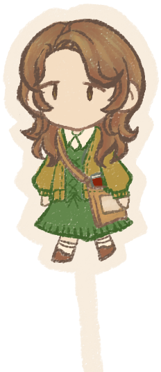
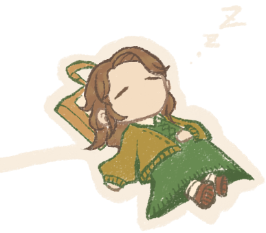
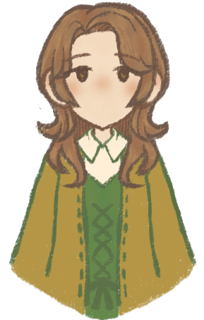

WORK
採用広告用LP


- 担当箇所
-
- ワイヤーフレーム
- デザイン
- 実装
- 使用ツール
-
- ワイヤーフレーム・デザイン：Adobe XD
- 実装：STUDIO
- 制作期間
- 2023年8月7日～9月20日
- 制作時間
-
- ワイヤーフレーム：1週間
- デザイン：2週間
- 実装：2週間
所属会社の採用担当さんからご依頼いただいた、採用のYahoo!リスティング広告で使うLP作成を行いました。
ワイヤーフレームからの制作は初めてだったため、作り方や考え方を調べながら作成を進めました。また、LPを一からデザインもSTUDIOの実装も初めてと未経験尽くしだったため大変良い機会をいただきました。
社内Slackのアイコン作成
グラフィックの実績詳細を準備中です。
COサイトリニューアル
- 担当範囲
- ディレクション、コーディング・レビュー、キャラクターデザイン・イラスト
- 使用ツール
- Figma、VS Code、SourceTree、SAI2
- 制作期間
- 2025年6月～12月
会社の魅力や信頼感を伝えるため、サイトのディレクションやコーディングレビュー、キャラクターデザイン・イラストを担当しました。事業内容や企業理念を伝え、会社の「堅実さ」と「遊び心」を可視化するリニューアルです。
https://jutjoy.com/メディアサイト 特集記事構築
- 担当範囲
- デザイン、コーディング
- 使用ツール
- Adobe XD、PHP、CSS
- 制作期間
- 2021年
記事ごとに異なっていた特集ページの構成を見直し、共通テンプレートを設計・構築しました。制作コストを抑えながら、特集ごとの世界観を表現できる仕組みを整えました。
メディア特集記事 アイキャッチ制作
- 担当範囲
- ターゲット・テーマ分析、デザイン
- 使用ツール
- Photoshop、Illustrator
- 制作期間
- 2020年～2021年
特集テーマや想定読者に合わせて、記事の魅力がひと目で伝わるアイキャッチを制作しました。
イラスト作品
イラストの実績詳細を準備中です。





ABOUT
N.S
- 年齢
- 27歳
- 出身
- 群馬県
- 職歴
- マークアップエンジニア 2年9ヶ月
フロントエンドエンジニア 3年6ヶ月
2020年4月に新卒で印刷/デザイン制作会社に入社。
web制作部にて、マークアップエンジニアとしてHP制作やCMSの記事更新などを担当。
2022年12月に退職。
2023年3月に株式会社JUTJOYに就職。
住宅探しのサイト制作・改修の案件に参画し、CMSの記事更新やHP改修はもちろん、angular環境での作業などを経験。
その後メディアサイトの運用保守のプロジェクトや、サイトリニューアルなども経験。
自社では、コーポレートサイトのリニューアルプロジェクトでディレクション兼リードテックを経験。その後も運用保守を行っている。
フロントエンドエンジニア教育のメンターとして、HTMLやCSS、JavaScriptなどのカリキュラムの受講者指導などを行っていた経歴もあり。


SKILL
スキルDesign Skill
デザインスキル- Photoshop
- 5年
- illustrator
- 5年
- XD
- 4年
- Figma
- 3年
- AfterEffect
- 1年
Engineer Skill
エンジニアスキル- HTML/CSS
- 6年
- JavaScript
- 4年
- jQuery
- 4年
- PHP
- 5年
- WordPress
- 6年
- Angular
- 6ヶ月
- Linux
- 2年
- SQL
- 6ヶ月
その他STUDIOでLP作成経験有
CERTIFICATION
所持資格- 電卓計算能力検定 3級 2018年 7月
- ビジネス文書検定 3級 2018年 7月
- コンピュータサービス技能 3級 2018年 8月
- CGクリエイター検定 ベーシック 2018年 12月
- カラーコーディネーター検定 3級 2019年 6月